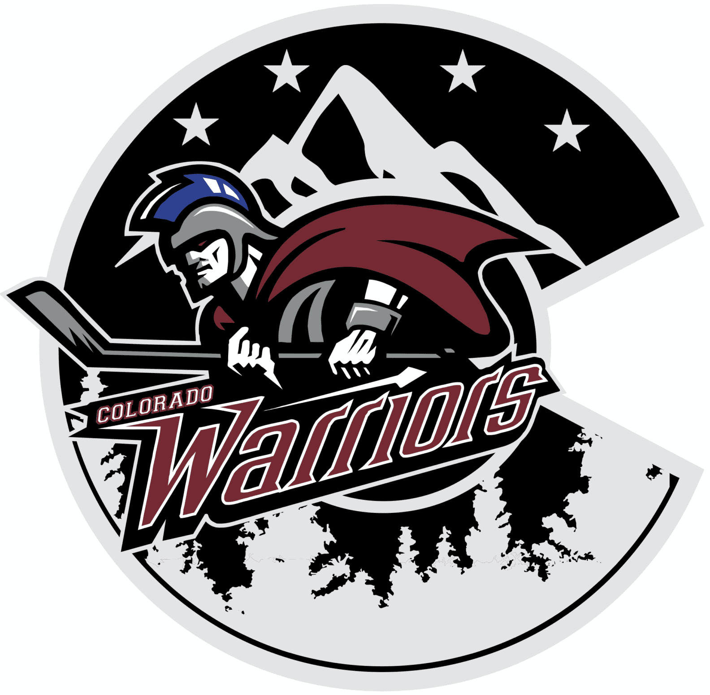

Case study · Community website redesign
Colorado Warriors Hockey
A complete website overhaul for a team that brings disabled veterans together through hockey. We rebuilt the navigation, page layouts, and content around what players and supporters came to do, while keeping the on-ice footage and team identity that make the Warriors recognizable.

A clearer way to get involved.
Remove the guesswork for newcomers
Labels like “The Command” and “Enlist Now” reflected the organization’s roots, but they didn’t tell a first-time visitor where to meet the board or how to try hockey. We reorganized the site around distinct visitor needs: learning who the Warriors are, finding out how to play, and choosing how to support the team.
Rebuild the interface around people
We paired new page layouts with plain-language navigation and action links like “Join a Practice.” Board portraits put faces to names on the story page. Inline video shows the team in motion, while a filterable photo gallery lets visitors explore what happens on the ice, at tournaments, and in the community.
Give every audience a route in
A veteran who has never played can find out what to expect at a first practice before getting in touch. Volunteers have a clear inquiry route, and supporters can find events, meet sponsors, or follow a dedicated donation link. Each path answers different questions while reinforcing the same message: there’s a place for you here.
Make it easier for people to get involved.
Explore our web design and development services for your next project.
Request a consultation